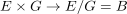
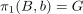
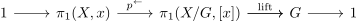
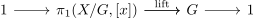
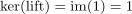
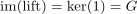

simply connected covering like group action and fundamental group
1. Proposition
Let  be a topological space,
be a topological space,  be a simply connected covering given by a covering-like group action
be a simply connected covering given by a covering-like group action

then for the fundamental group, it holds, that

2. Proof
corollary of
where

becomes

and hence

and
, hence a group-isomorphism